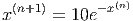
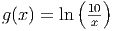
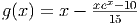
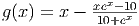
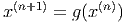
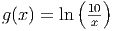
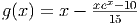
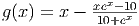
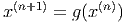

E 4.8.1. O circuito linear da figura 4.8.1 pode ser modelado pelo sistema (??). Escreva esse sistema na forma matricial sendo as tensões V 1, V 2, V 3, V 4 e V 5 as cinco incógnitas. Resolva esse problema quando V = 127 e

Complete a tabela abaixo representado a solução com 4 algarismos significativos:
| Caso | V 1 | V 2 | V 3 | V 4 | V 5 |
| a | |||||
| b | |||||
Então, refaça este problema reduzindo o sistema para apenas 4 incógnitas (V 2, V 3, V 4 e V 5).
E 4.8.2. Resolva os seguintes problemas:
 






